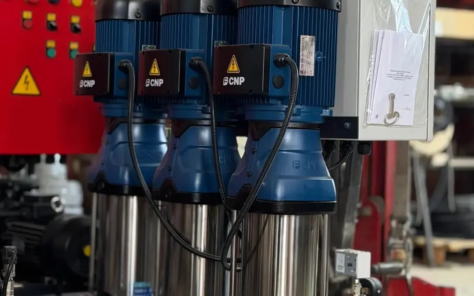
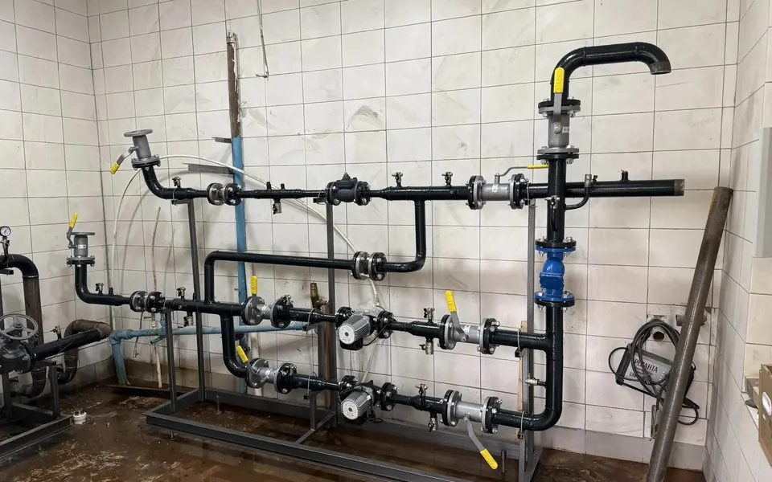
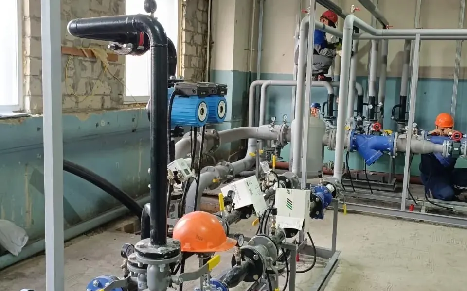
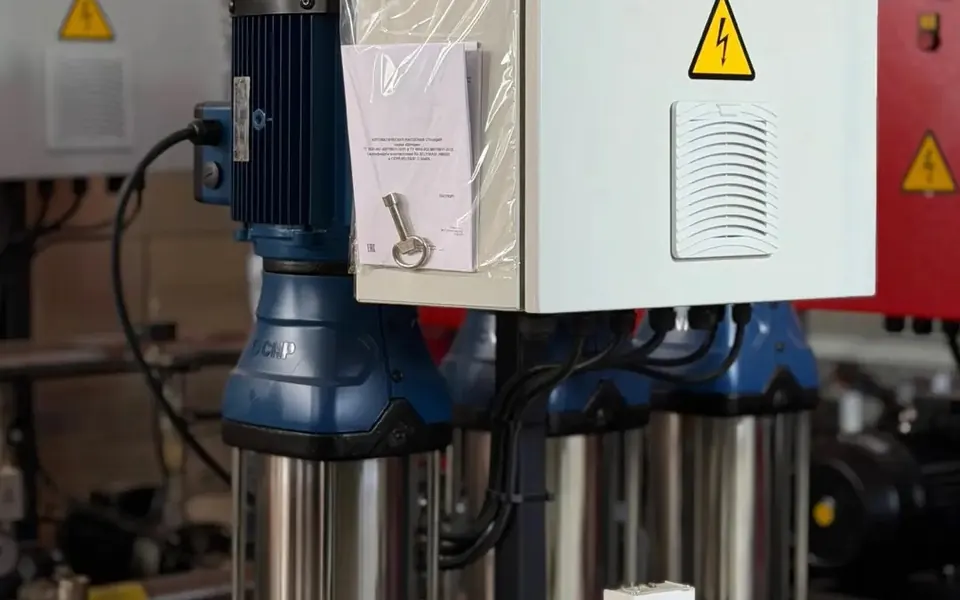
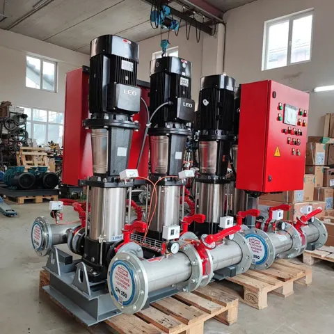
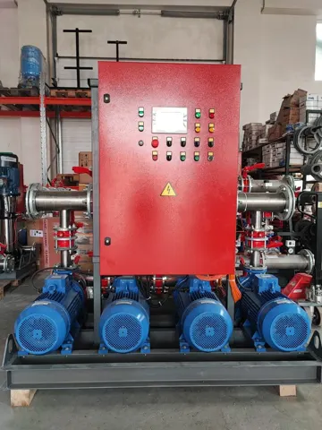

Объекты по всей России
Тепловые пункты и насосные станции работают в жилых комплексах, на производствах и в общественных зданиях. Отгружаем из Самары в любой регион.
Где работает наше оборудование
65 объектов в 36 городах. Нажмите на город или объект в списке.
Объекты
Завод в Самаре отмечен зелёным
Что мы сделали
Наведите на фото, чтобы увидеть заказчика и параметры.

АНССамараПожаротушение производственно-складских корпусов
Два рабочих и один резервный насос, вода забирается из подземной ёмкости.
- Подача
- 553 м³/ч
- Напор
- 78 м
- Мощность
- 90 кВт
- Ду
- 250

БТПМоскваАдминистративно-жилой комплекс, ул. 2‑я Лыковская, 2А
Отопление, вентиляция, бассейн, тёплый пол и ГВС по независимым схемам.
- Нагрузка
- 0,467 Гкал/ч
- График
- 95/70 °C
- Ду
- 100

ЦТПСамараОбщий ЦТП для группы домов, пр. Кирова, 255
Поэтапное подключение домов, независимое отопление и закрытая ГВС, учёт тепла и погодное регулирование для каждого дома.
- Регулирование
- погодное
- Подключение
- поэтапное

АНСКазаньАвтоматическая установка водяного пожаротушения
Два рабочих и один резервный насос.
- Подача
- 163 м³/ч
- Напор
- 70 м
- Мощность
- 22 кВт

АНСКалугаНасосная станция для жилого комплекса
Два рабочих и один резервный насос.
- Подача
- 9 м³/ч
- Напор
- 44 м
- Мощность
- 1 кВт

АНСКемеровоНасосная станция для жилого комплекса
Два рабочих и один резервный насос.
- Подача
- 28 м³/ч
- Напор
- 98 м
- Мощность
- 7,5 кВт
С объектов
Рассчитаем ваш объект за 1 день
Опишите объект или пришлите опросный лист, предложим решение в нескольких вариантах комплектации.
- Подбор по нагрузкам и графику
- 3D-модель до изготовления
- Доставка в любой регион